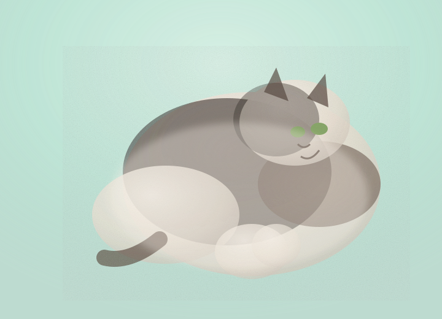

にじむ輪郭
境界が溶けることで、毛並みのふくらみがより豊かに。視線が自然と吸い込まれます。
まどろみ猫のアルバム
水彩のやさしい空気に包まれた魅力紹介
まどろむ午後、光がとけた毛並み。
透明感のある緑の背景に、白・黒・こげ茶がふんわりにじむ。体の丸みも、視線の奥も、 そっと触れたくなる空気ごと描かれています。

水彩ならではの「空気の層」が猫の気配をより近くに感じさせます。
境界が溶けることで、毛並みのふくらみがより豊かに。視線が自然と吸い込まれます。
丸く沈んだ体が安心感を伝える。飼い主のそばで眠る、あの静かな時間を想起させます。
淡い緑と白い毛が混ざり、午後の光がゆっくりと移ろう情景が浮かびます。
水彩でこそ際立つ、表情・質感・やさしい存在感。
目の薄いグリーンが控えめに光り、見る人の心を落ち着かせます。
水彩のにじみが毛の柔らかさを強調。触れずとも体温が伝わるよう。
丸く広がる体が頼もしさを演出。そっと寄り添いたくなる姿です。
やわらかな背景と毛色の対比が、存在感を引き上げます。
空気感を出す淡緑。猫の白さをより優しく見せます。
柔らかな光を含む白。毛並みの厚みを表現します。
体の立体感を生む深いブラウン。静かな落ち着きを添えます。
水彩のにじみは、猫の鼓動を聞くような感覚を残します。ゆっくり深呼吸しながら、 絵の中の気配に耳を澄ませてください。